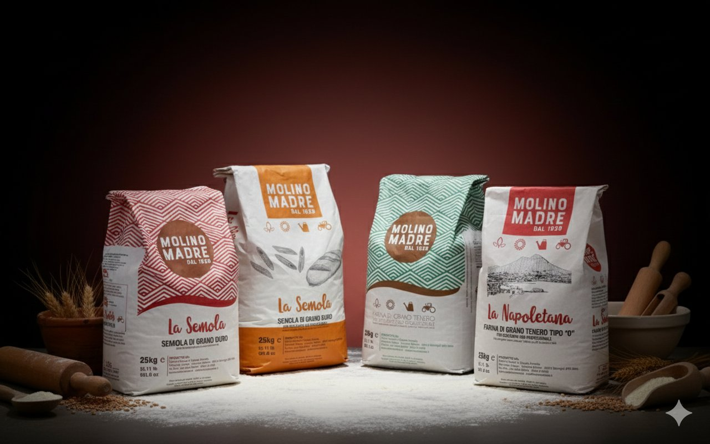
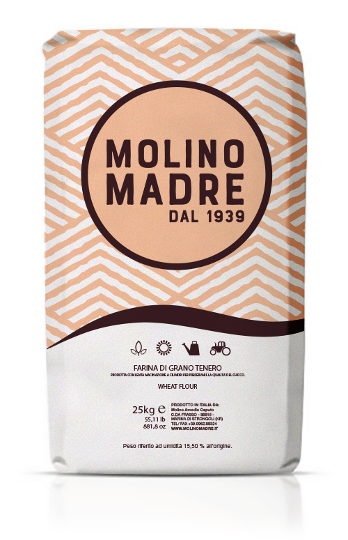

Le nostre farine a corpo unico con germinazione assistita permettono di ottenere impasti facilmente digeribili e con un profumo ineguagliabile. Ideali per tutti i tipi di forni.

Farine studiate per valorizzare ogni stile di pizza: dalla napoletana tradizionale alle basi sottili romane, fino al cornicione medio.

Consigliata per chi vuole ottenere un cornicione alveolato, friabile e dorato, tipico della pizza classica napoletana. Ideale per medie e lunghe lievitazioni dalle 8h a temperatura ambiente, può essere portata a maturazione per 24h o 48h in cella frigorifera a +4°.
Consigliata per la preparazione di focacce, pizze in teglia e alla pala. Ideale anche in pasticceria: pan di Spagna, torte soffici, plumcake, muffin e brioche. Contiene maggiori quantità di crusca e germe di grano.
Consigliata per basi sottili, croccanti e leggere. Ideale per impasti ad alta idratazione, pizza in teglia, pizza alla pala e pinsa.
Consigliata per la preparazione di pizze con uno spessore medio di cornicione. Il giusto compromesso tra pizza napoletana e romana. Adatta per lievitazioni dirette e indirette, dalle 8 alle 12 ore.
Garantito all'origine con filiera completamente tracciabile dal seme alla farina.
Selezione di grani autoctoni calabresi che rispettano la biodiversità del territorio.
24 passaggi per preservare il germe e le sostanze nutritive di ogni chicco.
Impasti facilmente digeribili con profumo e carattere ineguagliabili.
Farine per ogni esigenza di panificazione: dai pani grandi rustici ai piccoli lievitati soffici, fino alla grande pasticceria e alle frolle.
Ideale per pane grosso e per pasta fresca e secca. La lenta macinazione preserva il colore giallo intenso e il profumo autentico del grano duro.
Ideale per tutti gli usi e in particolare per pane grosso. Indicata per brevi lievitazioni, offre risultati costanti e affidabili in ogni preparazione.
Ideale per rosette, ciabatte, prodotti a lunga lievitazione, prodotti da forni industriali e surgelati. Garantisce leggerezza e alveolatura eccellente.
Consigliata per l'impiego in pasticceria. Ideale per impasti diretti e indiretti, per pizza a lunga lievitazione, bighe e poolish.
Ideale per prodotti da forno a media e lunga lievitazione e per la preparazione di impasti molto idratati. Contiene maggiori quantità di crusca e germe di grano.
Ideale per tutti gli usi, in particolare per frolle, biscotti e preparazioni da pasticceria. Indicata per brevi lievitazioni e impasti sabbiati.
Semole di grano duro lavorate in lenta macinazione per pasta fresca e secca di qualità superiore: colore giallo intenso, profumo di grano appena raccolto, sapore autentico e garantito all'origine.
Ideale per pasta fresca e secca. Ottenuta dalla lenta macinazione di grani duri italiani selezionati.
Per la produzione di pane di semola dall'inconfondibile colore giallo intenso e dal profumo di grano appena raccolto.
Per un impasto che non appiccica: la fragranza è prolungata e la crosta risulta gradevole e croccante.
La farina rinforzata a lenta macinazione adatta per lievitazioni dirette e indirette, dalle 8 alle 12 ore.
Farine integrali, miscele multicereali e lievito madre essiccato per i professionisti che ricercano carattere, nutrizione e profumi autentici.
Adatta a tutti gli impasti diretti e indiretti dove si richiede ottima elasticità e elevato assorbimento d'acqua. Consigliata anche per impasti a lievitazione controllata (frigorifero). Si presta a un utilizzo diversificato: pasticceria, pizzeria e panificazione. Ottenuta dalla macinazione del seme intero, contiene un maggior quantitativo di sostanze nutritive e favorisce una migliore digestione.
Ideale per la preparazione di pane contadino, cracker, grissini, focacce e pizza. Farina di frumento, segale, semi di girasole, sesamo, lino nero e giallo, farina d'orzo e malto.
Aumenta stabilità e lievitazione, agisce sul glutine tramite l'acido lattico per rendere la maglia glutinica più stabile. Migliora gusto e aroma. Rende il prodotto finito più stabile e morbido nella masticazione a freddo.
I nostri tecnici di laboratorio e il centro impasti sono a tua disposizione per trovare la farina perfetta per la tua lavorazione.